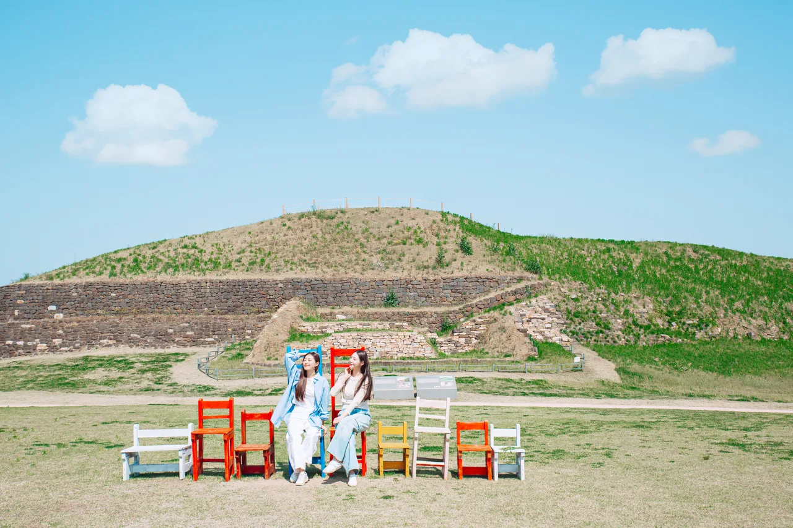
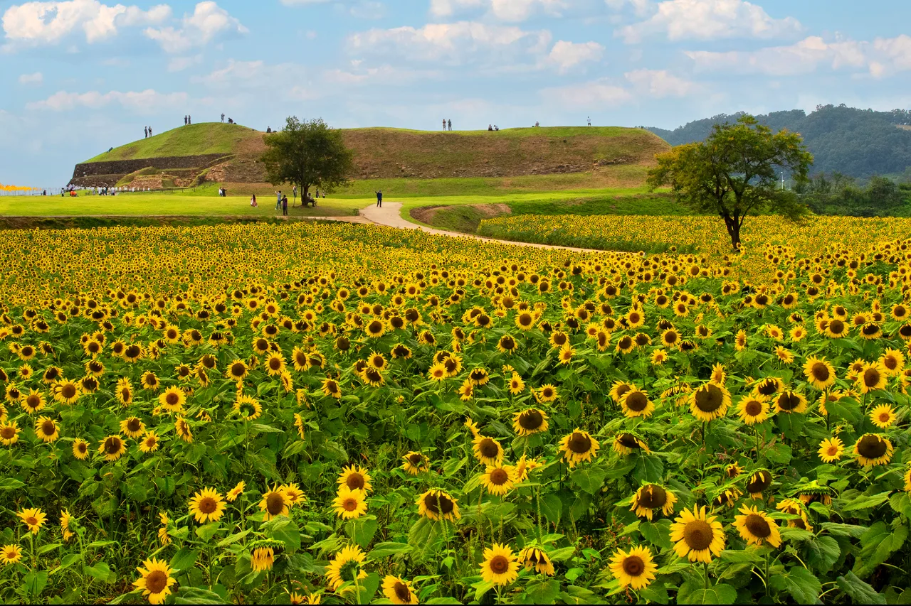

▲ 해가 질 무렵의 호로고루. 고구려 성벽과 해바라기밭, 붉게 물든 하늘이 한 프레임에 들어온다 ⓒ 연천군청
1. 오늘 개막, 나흘짜리 해바라기 축제
제11회 연천장남 통일바라기 축제가 오늘 9월 3일(목)부터 6일(일)까지 나흘간 열립니다. 개막식은 3일 오전 10시 30분, 장소는 경기 연천군 장남면 원당리 호로고루 유적지 앞 들판입니다.
축제의 중심은 3만 3천 평 규모의 꽃밭입니다. 해바라기와 백일홍, 코스모스가 함께 피어 있고, 절정기에는 해바라기만 25만 송이에 이른다고 알려져 있습니다. 입장료는 무료입니다.
| 구분 | 내용 |
|---|---|
| 기간 | 9월 3일(목) ~ 6일(일) |
| 장소 | 연천군 장남면 원당리 호로고루 유적지 앞 들판 |
| 홍보관 운영 | 10:00 ~ 17:00 |
| 공통 프로그램(4~6일) | 13:00 마술, 14:00 노래자랑, 15:00 버스킹, 16:00 초대가수 공연 |
| 입장료·주차 | 무료 |
다만 개화 상태는 날짜와 별개로 확인이 필요합니다. 올해는 폭염 영향으로 해바라기 개화가 예년보다 빨랐다는 보고가 있어, 해바라기를 목적으로 방문한다면 축제 종료일보다 방문을 서두르는 편이 낫습니다. 체류 시간은 보통 1~1.5시간, 노을 촬영까지 계획한다면 2시간 이상을 잡는 것이 좋습니다.
2. 꽃밭 뒤에 있는 것은 고구려 성곽이다

▲ 호로고루 성벽 아래 조성된 포토존. 계단식으로 쌓인 흙 둔덕이 고구려 시대 성곽의 흔적이다 ⓒ 연천군청
호로고루는 임진강 북안의 현무암 대지 위에 남은 고구려 시대 성곽입니다. 둘레는 약 401m, 면적은 107,258㎡이며 2006년 사적으로 지정됐습니다.
이 성벽의 정상에 올라가면 방문 목적이 하나 더 늘어납니다. 임진강과 주변 평야, 강을 건너는 길목까지 한눈에 들어오는 조망 포인트이기 때문입니다. 꽃을 보러 왔다가 성벽까지 걸어 올라가는 동선이 자연스럽게 이어지는 구조입니다.
호로고루가 있는 이 구간은 평화누리길 10코스와도 겹칩니다. 장남교에서 고랑포구까지 약 5km 구간으로, 강을 따라 걷는 코스 중간에 호로고루가 자리하고 있습니다.
3. "민통선 근처"라고 다 통제구역은 아니다
연천은 군사분계선과 맞닿은 접경지역입니다. 그래서 관광지를 찾아보면 사전 신청이 필요한 곳이 먼저 눈에 띕니다. 대표적인 곳이 태풍전망대입니다. 개인·단체 모두 방문 7일 전 출입안내소에 선착순으로 신청해야 하고, 하루 4회(9:30·11:00·13:30·15:00) 정해진 시간에만 출발할 수 있으며, 매주 화·수요일은 휴관입니다.
호로고루는 이 목록과 다릅니다. 연천군 관광 정보에서 태풍전망대·상승전망대·비룡전망대 같은 곳은 '안보관광·체험'으로 분류되는 반면, 호로고루는 '국가지정 문화유산' 목록에 속해 있습니다. 즉 사전 출입 신청 절차 없이 방문할 수 있는 것으로 파악됩니다. 연천역에서 시티투어나 일반 택시로 접근할 수 있다는 점도 이런 차이를 뒷받침합니다.
다만 접경지역의 특성상 상황은 바뀔 수 있습니다. 군사적 긴장이 높아지는 시기이거나 별도 통제가 발령된 경우라면 현장 상황이 다를 수 있으므로, 방문 전 연천군 문화체육과(031-839-2565)로 최신 상황을 확인해 두는 편이 안전합니다.
4. 언제 가야 하나 — 정오보다 아침저녁

▲ 낮 시간대의 호로고루. 해가 높이 뜬 정오 무렵보다는 아침이나 노을 시간대의 빛이 해바라기밭과 더 잘 어울린다 ⓒ 연천군청
이 여행지는 시간대에 따라 사진과 체감 온도가 크게 달라집니다. 한여름 정오 무렵은 뙤약볕이 그대로 내리쬐는 개방된 들판이라 체류가 힘들 수 있습니다. 반면 오전 10시 이전이나 오후 5시 전후 노을 시간대는 빛의 각도가 낮아 해바라기와 성곽이 함께 담기는 사진을 찍기에 유리합니다.
축제 기간의 공통 프로그램도 오후에 몰려 있습니다. 13시 마술 공연부터 16시 초대가수 공연까지 이어지는 만큼, 프로그램까지 챙기고 싶다면 늦은 오후에 도착해 노을과 공연을 함께 보는 일정이 효율적입니다.
5. 주차와 접근 — 무료이지만 몰리는 시간은 있다
호로고루 입구에는 대형 야외 주차장이 마련돼 있고, 입장료와 마찬가지로 주차 요금도 무료입니다. 주차장에서 꽃밭까지 이어지는 산책로와 화장실도 갖춰져 있습니다.
다만 개화 절정기와 축제 기간이 겹치는 지금은 주차 혼잡이 예상됩니다. 특히 오후 초대가수 공연이 있는 날은 오후 한때 방문객이 몰릴 가능성이 있어, 이른 오전에 도착해 성벽과 꽃밭을 먼저 둘러보고 늦은 오후까지 머무는 방식이 주차난을 피하는 데 유리합니다.
대중교통으로는 수도권 전철 1호선 연천역에서 시티투어나 택시로 갈아타는 방법이 있습니다. 자차가 없다면 연천 시티투어 운행 요일(수요일)에 일정을 맞추는 것도 고려할 만합니다.
6. 정리
이 여행지의 핵심은 두 가지입니다. 하나는 축제 기간이 나흘뿐이고 개화가 예년보다 빨랐다는 점, 다른 하나는 접경지역이라는 인상과 달리 사전 출입 신청 없이 갈 수 있는 곳이라는 점입니다.
정리하면, 지금 바로 일정을 잡을 수 있다면 오늘이나 내일 이른 오전, 아니면 주말 노을 시간대를 추천합니다. 정오의 뙤약볕보다는 아침저녁의 빛이 해바라기밭과 임진강, 그리고 그 뒤에 선 고구려 성벽을 훨씬 근사하게 담아냅니다.